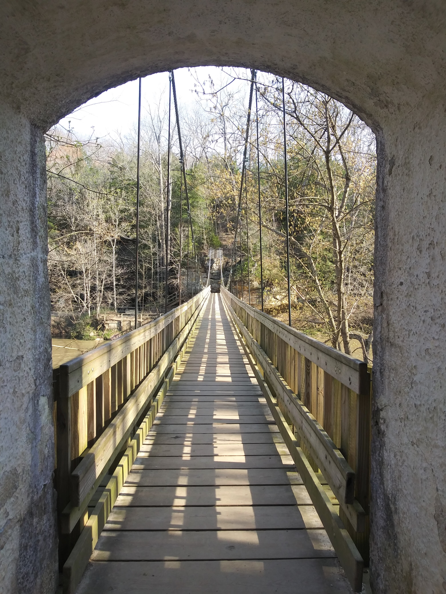
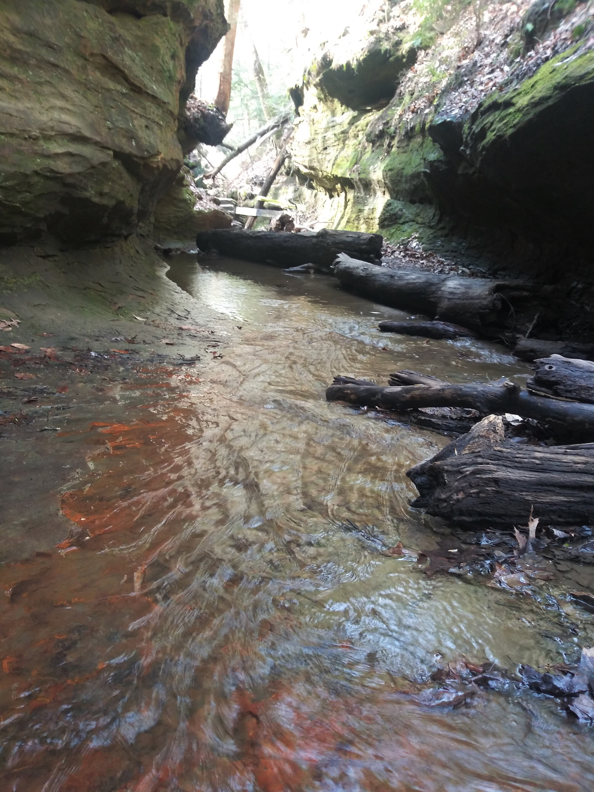
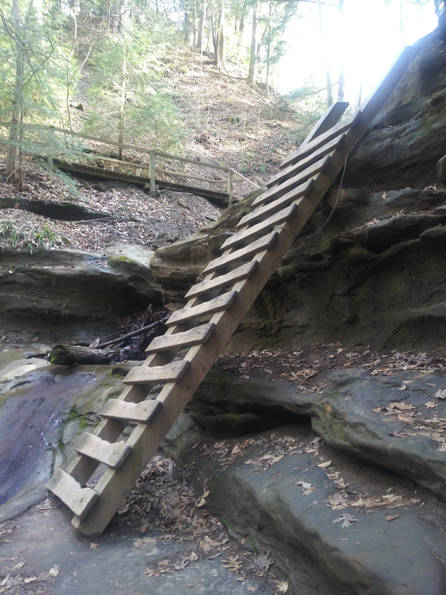
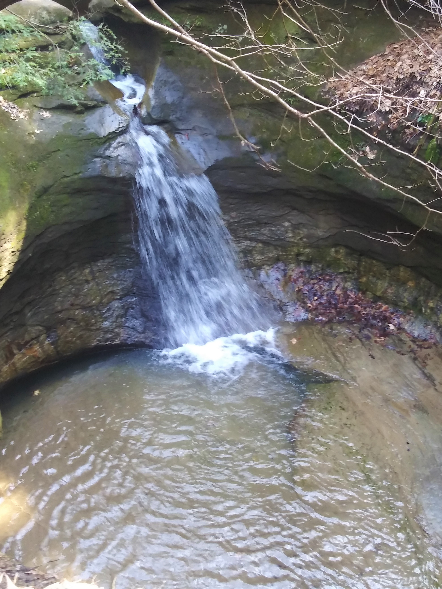

Turkey Run State Park- Trail 3
Suspension Bridge 
Most of the trails can be accessed by crossing a long suspension bridge.
Trail 3 is one of the most popular trails in the park.
The Creek 
This trail goes through the creek bed several times. During periods of high water, some areas will be impassable. Prepare to get your feet wet!
The Ladders
There are three wooden ladders that you will need to climb to get out of the canyon.
The Punchbowl
There are several waterfalls throughout the park.